玩具的家在哪里？
一个关于整理、魔法与帮玩具回家的温暖故事
绘本故事
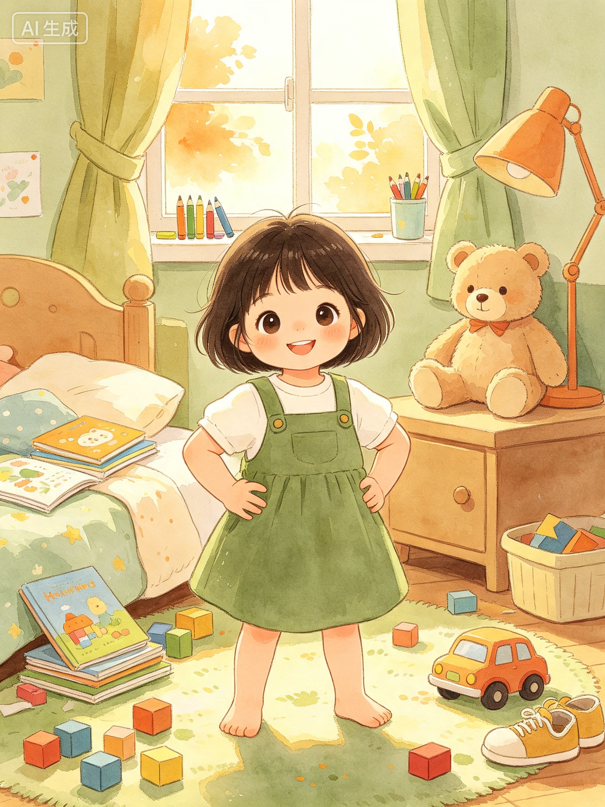
这是小希宝的房间。哇，好多玩具！积木住在地毯上，绘本躺在枕头边，小汽车藏在鞋子里......小希宝说："这样多好，我随时都能找到它们！"
"宝贝，你看看自己的房间，现在是什么样子的呀？"
"你看，小希宝的房间也是这样，到处都是玩具和东西。是不是看起来有点乱乱的？很多东西不在它该在的地方，对不对？"
"你觉得小希宝看到这么乱的房间，心里是什么感觉？"
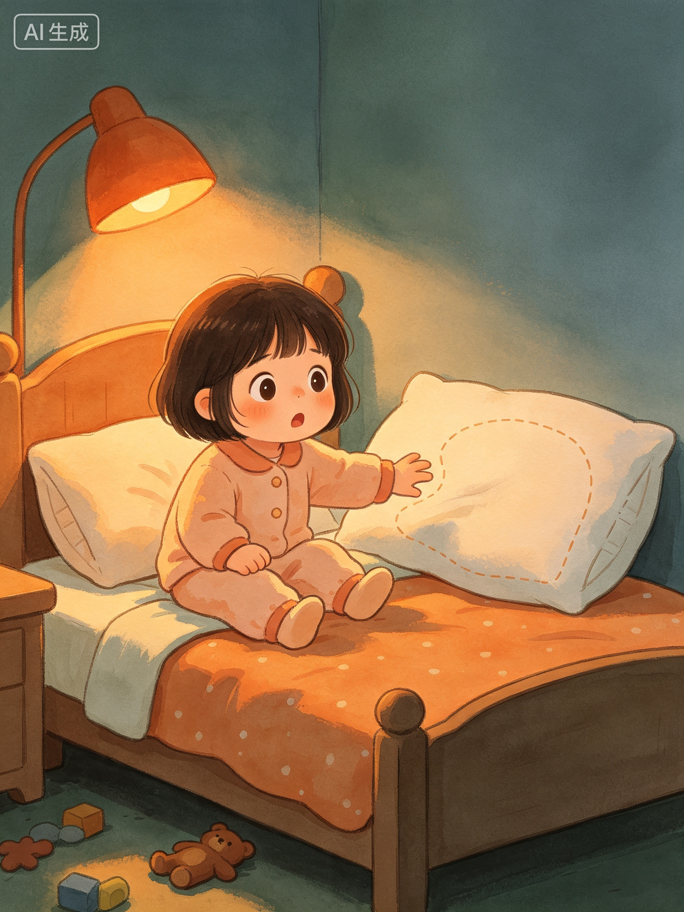
可是有一天晚上，小希宝想抱着她最好的朋友——小布熊睡觉。她伸手一摸......空的！小布熊不见了！
"你有没有找不到自己最喜欢的玩具的时候？当时什么感觉？"
"小希宝找不到她最喜欢的小布熊了！她翻了好久都没找到。找不到心爱的东西，心里会着急、会难过，对不对？这种感觉妈妈/爸爸懂。"
"你觉得小布熊为什么会找不到？它可能去哪里了？"
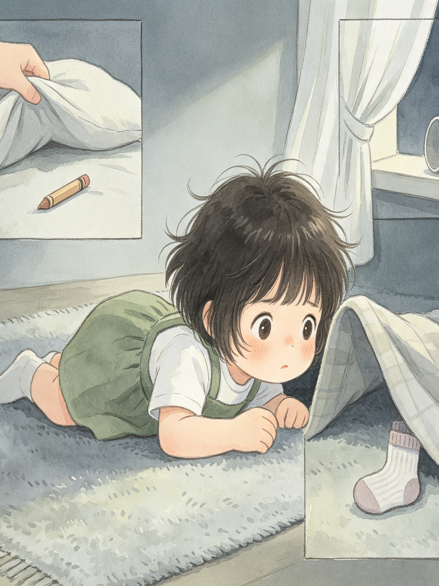
小希宝爬下床，趴在地毯上找。"小布熊，你在哪儿？"她翻遍了枕头底下、被子里面、窗帘后面......可是哪里都找不到。
"你猜，会有人来帮小希宝吗？"
"有一个温暖的声音告诉小希宝：'玩具们迷路了，每件东西都有自己的家。'你看，玩具不是故意捣乱弄乱房间的，它们只是迷路了，找不到回家的路。是不是和你一样，有时候也会找不到东西放在哪里？"
"你觉得玩具迷路了会害怕吗？它们想不想回家？"
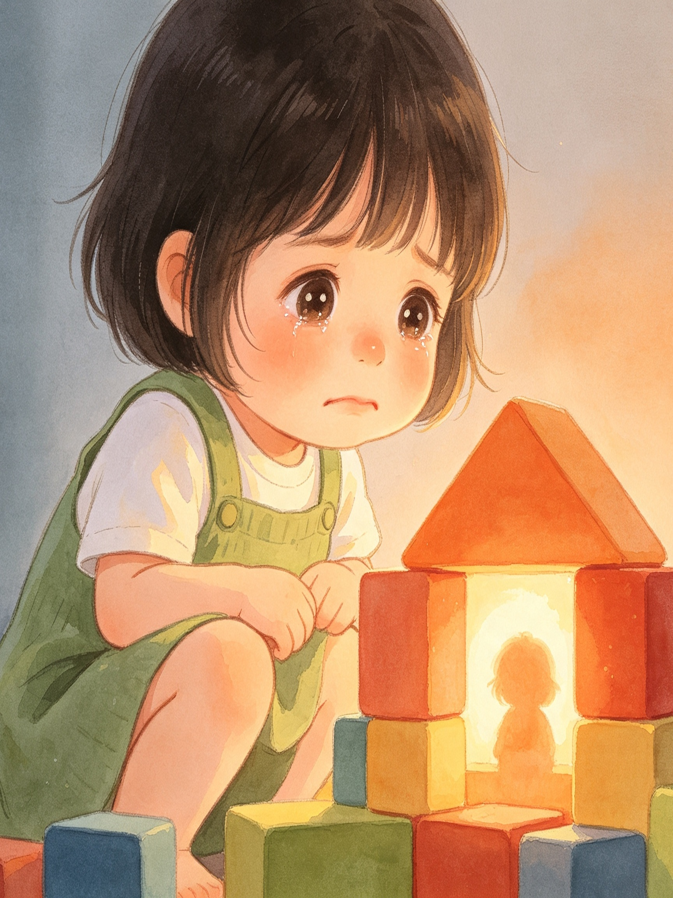
就在小希宝快要哭出来的时候，积木堆里传来了一个温暖的声音："宝贝，你的玩具们迷路了。"
"你觉得，小汽车的家在哪里？绘本的家在哪里？"
"小希宝开始帮玩具找家了。你看，小汽车的家是玩具箱，绘本的家是书架，衣服的家是衣柜。每样东西都有自己的家，就像你有自己的家一样。你想想，你的玩具们都住在哪里呀？"
"你的小汽车现在在家吗？绘本呢？我们一起去你的房间看看好不好？"
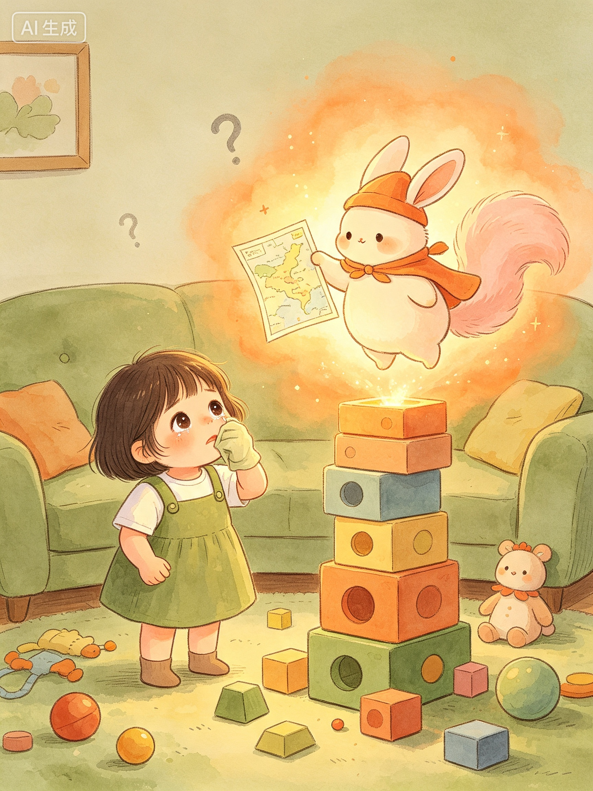
"嗖——"一个小精灵从积木堆里跳了出来！它戴着暖橙色的帽子，手里拿着一张闪亮的小地图。安家小精灵笑着说："我是安家小精灵！每件东西都有自己的家，不给它们安家，它们就会迷路哦。"
"如果你是小希宝，你会先帮哪件玩具回家？"
"小希宝一件一件地把玩具送回家。她先送小汽车回玩具箱，再送绘本回书架。你看，她没有一次性全部抓起来，而是一件一件来。这样是不是不那么累？就像我们走路，一步一步走，就不会摔跤。"
"你觉得一件一件送回家，和一次性全部塞进去，哪个更好？为什么？"
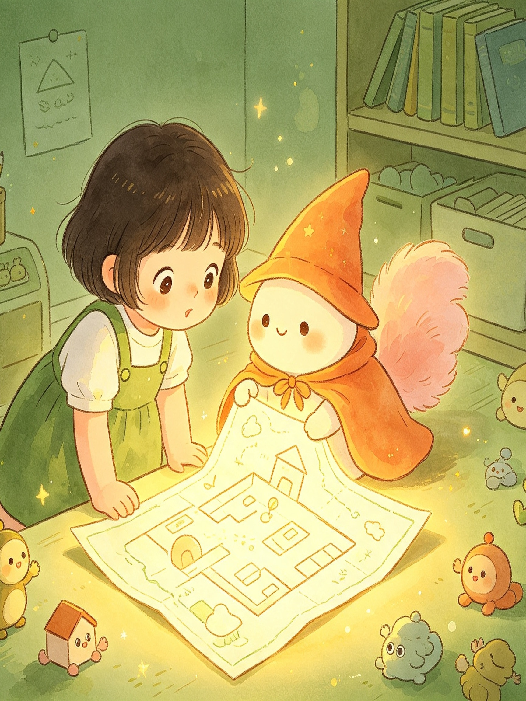
安家小精灵展开地图说："你看，绘本的家在书架上，积木的家在收纳箱里，蜡笔的家在笔筒中......我们一起来送它们回家吧！"小希宝点点头："好！"
"你猜，玩具回家之后，房间会有什么变化？"
"你看！随着玩具一件件回家，房间开始变亮了！是不是很神奇？原来，当东西都回到自己的家，房间就会亮起来。就像天黑了玩具也想休息，回到自己的家它们才能安心睡觉。"
"你有没有见过房间变亮的样子？是不是看起来舒服多了？"
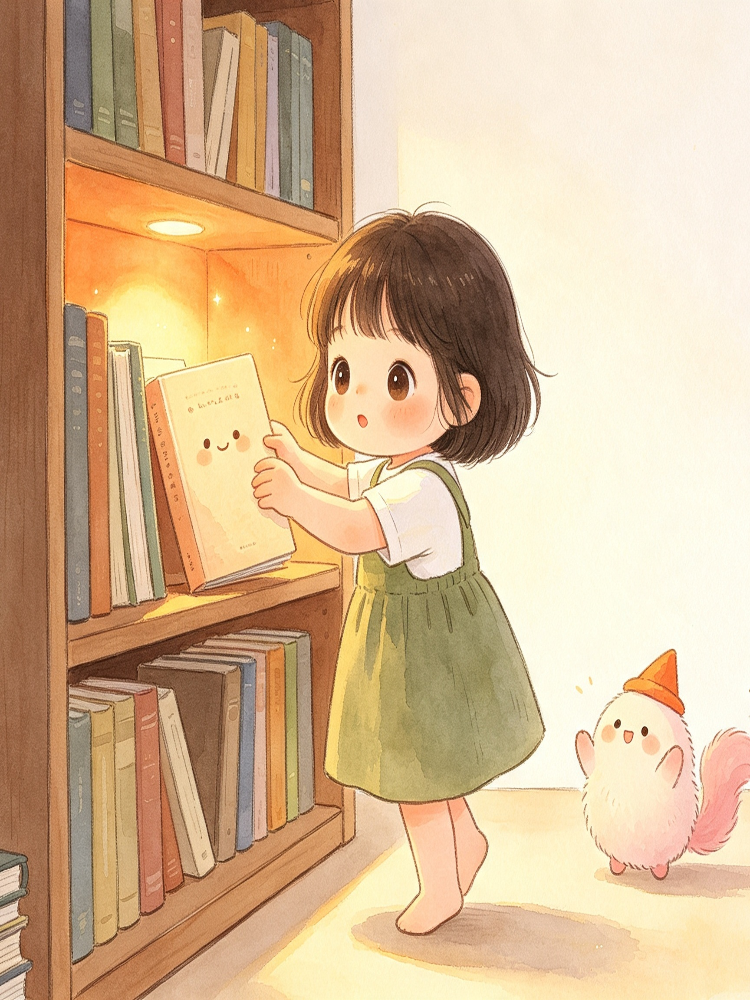
小希宝抱起地上的绘本，轻轻放进书架。"绘本，欢迎回家！"绘本笑了，书架上也亮起了一点暖橙色的光。
"你看，还有一个地方特别乱，那是什么？"
"这里有一大堆积木堆在一起，看起来好乱呀。有时候最难整理的地方，就是东西最多的地方。但是没关系，小希宝也没有害怕，她一块一块地把积木收起来。遇到一大堆东西，我们也可以像她一样，一块一块来，不用着急。"
"你房间里有没有一个'最难整理'的地方？我们一起想想怎么对付它好不好？"
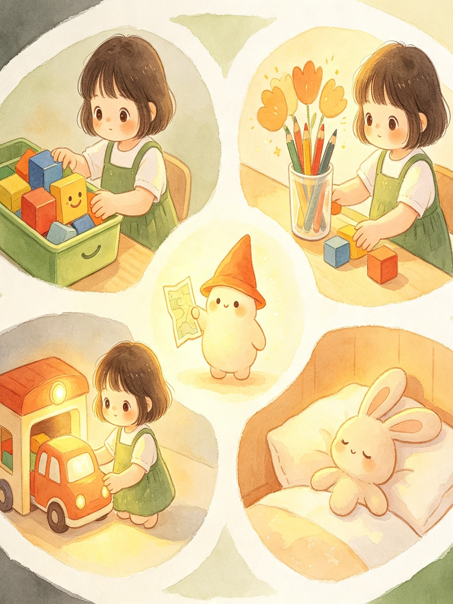
接下来，积木回到了收纳箱，蜡笔回到了笔筒，小汽车停进了玩具车库......每送一样玩具回家，房间就亮一点！小希宝觉得自己像个小魔法师！
"你觉得房间全部整理完，会变成什么样？"
"哇，房间全部变亮了！你看，小希宝把每件东西都送回了家，现在她的房间好干净、好舒服。她做到了！你看到她的表情了吗？她好开心、好自豪。因为她自己帮所有玩具找到了家。这种开心的感觉，就是你把房间整理好之后会有的感觉哦。"
"你觉得小希宝现在心里在想什么？你想不想也试试这种感觉？"
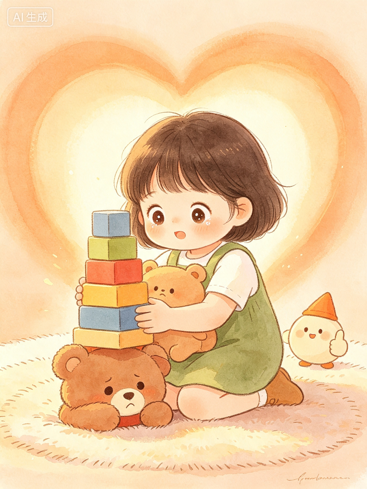
突然，小希宝看到了——积木堆最底下，露出一只棕色的小耳朵！"小布熊！原来你被压在积木下面了！"她小心地抱起小布熊，紧紧地搂住它。
"你猜，小布熊藏在哪里了？"
"原来小布熊就藏在积木堆底下！小希宝把积木收好之后，终于找到了它。你看，原来整理不只是把房间变干净，还能帮我们找到找不到的东西呢！如果房间一直乱乱的，小布熊可能就一直找不到啦。"
"你有没有什么东西找不到了？说不定它也藏在某个乱乱的地方，等我们整理的时候就能找到呢！"
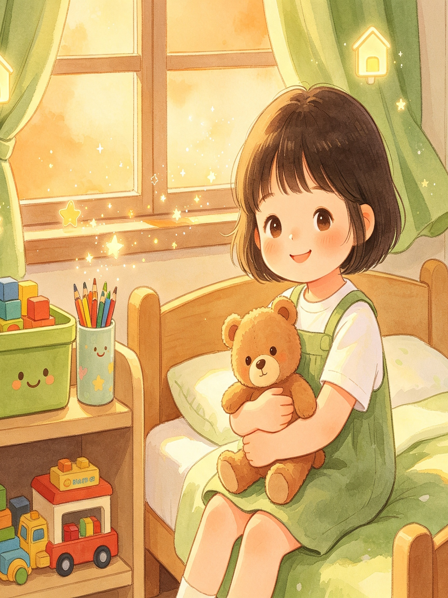
小希宝抱着小布熊，环顾房间。书架整整齐齐，玩具各就各位，地板干干净净。房间好亮、好温暖！"以后我每天都送你们回家。"小布熊在她怀里笑了。
"小希宝找到小布熊了，你觉得她以后还会让房间乱糟糟吗？"
"小希宝抱着小布熊，看着亮亮的房间，她说：'以后我要帮每件东西都找到家。'因为她知道了，整理不是无聊的事，是帮玩具回家，是让房间变亮的魔法。你想不想也当一个会魔法的整理小能手？今天我们就从送一件玩具回家开始，好不好？"
"今天你想先帮哪件玩具回家？我们一起来好不好？"
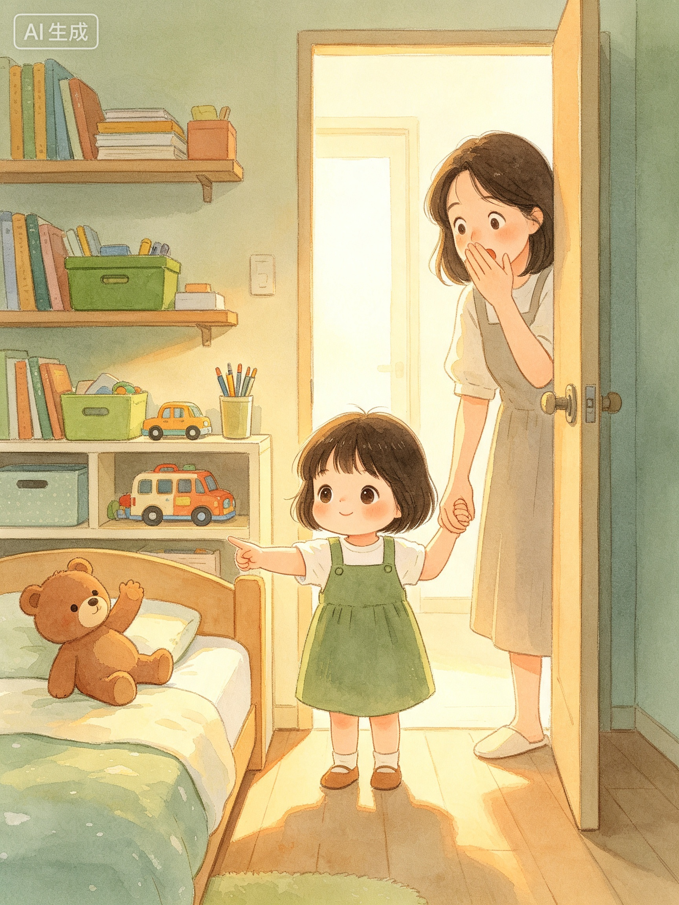
妈妈走进来，看到整洁的房间，惊讶地张大了嘴巴。小希宝拉着妈妈的手说："妈妈你看！我给每个玩具都找到了家！它们再也不会迷路了！"
"你觉得妈妈看到房间变干净了，会是什么表情？"
"妈妈看到房间好惊讶！小希宝好自豪地向妈妈展示，因为这是她自己做到的。你看，整理不只是自己的事，还能让妈妈也开心呢。你想不想也让妈妈/爸爸看到你整理好的房间时，露出这样的表情？"
"今天我们就从送一件玩具回家开始好不好？你选哪一件？"
安家小地图
绘本的家在书架上，积木的家在收纳箱里
小汽车的家在车库中，蜡笔的家在笔筒中
每件东西都有家，送它回家不迷路！
互动教具
点击「打印此页」可直接打印教具图，剪下即可使用。
我的物品寻家地图
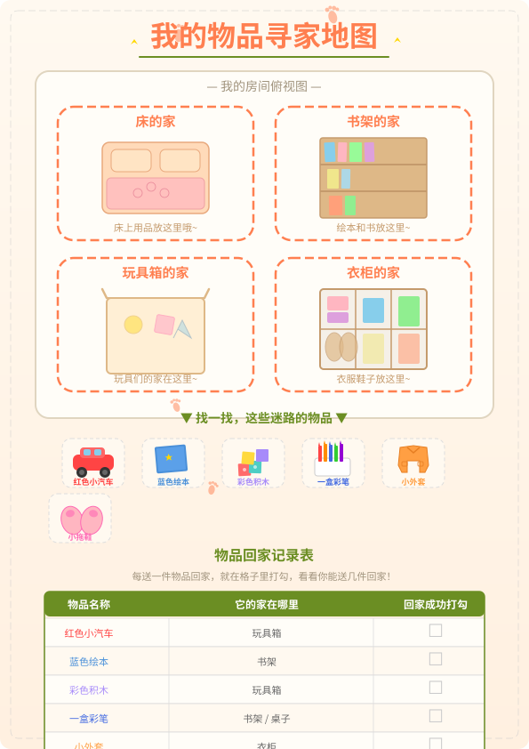
页面主体是一张房间俯视图，房间四个角落画着四个"家"（床、书架、玩具箱、衣柜）。中间散落着6件物品（小汽车、绘本、积木、彩笔、小外套、小拖鞋），孩子需要用笔从每件物品画一条线，连到正确的"家"。底部设有"物品回家记录表"，每送一件物品回家就在格子里打勾，攒满6个勾可以换一个小奖励。
整理魔法师证书
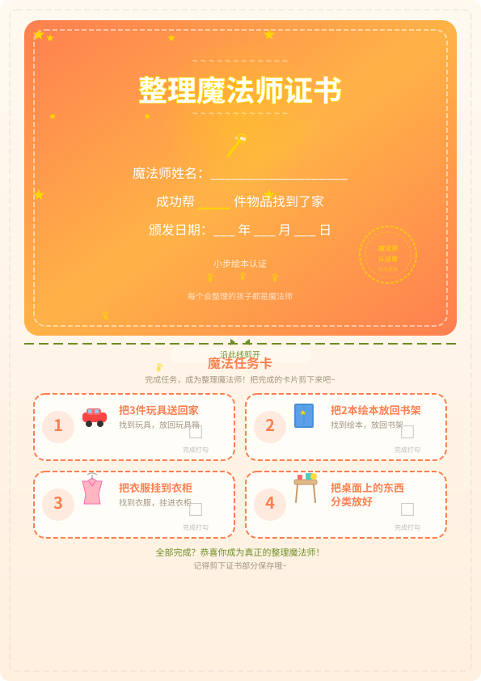
页面分为上下两部分（沿虚线剪开）。上半部分是"整理魔法师证书"，含魔法师姓名、成功帮___件物品找到家、颁发日期等填写区，右下角留盖章区。下半部分是4张可剪下的魔法任务卡：把3件玩具送回家、把2本绘本放回书架、把衣服挂到衣柜、把桌面上的东西分类放好，每张完成后打勾。
我的整理日记
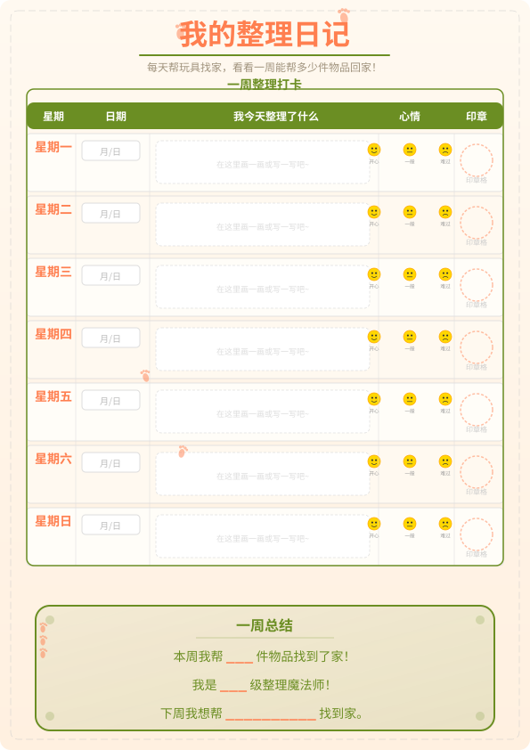
一周整理打卡日记，每天记录：日期、今天整理了什么（画一画或写一写）、心情（圈出表情）、印章格（家长盖章或贴贴纸）。页面底部设有"一周总结区"：本周帮___件物品找到了家！我是___级整理魔法师！下周我想帮________找到家。（1-10件=见习魔法师，11-20件=高级魔法师，20件以上=大师魔法师）
练习任务卡
5个生活实践任务，递进式设计，从易到难。把"整理"变成帮玩具找家的冒险。
送一件物品回家
- 和孩子一起站在房间中间，环顾四周，对孩子说："我们来玩一个'送玩具回家'的游戏，你挑一件迷路的玩具，帮它找到家好不好？"
- 让孩子自己选一件散落在外的物品（玩具、书、衣服都行，只选一件）。
- 问孩子："你觉得它的家在哪里呀？"让孩子自己指方向，不要直接告诉答案。
- 孩子把这件物品放回对应位置后，家长像宣布好消息一样说："哇，小汽车回到家了！它一定很开心。"
- 给孩子一个击掌或拥抱，说："你帮它找到了家，真厉害！"
玩具大搬家
- 对孩子说："今天我们要帮一类玩具全部搬回家！你想先帮谁搬家？小汽车？积木？还是毛绒玩具？"
- 孩子选定一类玩具后，家长和孩子一起在房间里"寻宝"：把散落各处的这一类玩具全部找出来，集中放到一个篮子或小筐里。
- 找齐后，一起数一数："哇，一共找到___个！它们都在外面迷路了呢。"
- 带孩子走到玩具箱（或这类玩具的固定收纳处），说："来，一个个送它们回家。"让孩子亲手一件件放进去。
- 全部放完后，家长宣布："这一类玩具全部搬家成功！它们的家现在好热闹呀。"
绘本小队回家
- 对孩子说："绘本小队在外面迷路啦，我们来帮它们排好队回家好不好？"
- 先和孩子一起把散落在房间各处的绘本全部收集起来，堆成一摞。
- 一起观察书架："绘本的家在哪里？我们看看书架上有几个空位。"
- 教孩子一个整理小技巧："大本的绘本放下面，小本的放上面，这样它们站得稳，不会倒。"（边说边示范一本）
- 让孩子自己一本本往书架上放，家长在旁边看着，偶尔提醒"这本是不是有点歪？帮它站直一点"。
- 全部放好后，退后两步一起欣赏："你看，绘本小队整整齐齐地回家了，像不像一排小士兵？"
我的小天地大扫除
- 对孩子说："今天我们要给你的小天地来一次大扫除！你选书桌还是那个角落？这个区域里所有迷路的东西，我们都要帮它们找到家。"
- 和孩子一起站在选定的区域前，先观察："我们来看看，这里有哪些东西迷路了？"让孩子自己说。
- 准备3个小筐或袋子，分别贴上标签（或画上图标）："玩具的家""书本的家""其他的家"。告诉孩子："先把迷路的东西按种类分到这几个筐里。"
- 孩子分类完成后，一个筐一个筐地送回家：玩具筐倒进玩具箱、书本筐放回书架、其他筐由孩子决定每件东西回哪里。
- 全部归位后，拿一块小抹布让孩子擦一擦空出来的桌面或地面。家长说："看，你的小天地变亮了，跟绘本里宝宝的房间一样亮！"
- 拍一张照片留念，或让孩子在整理日记上画下来。
房间整理计时赛
- 选一个周末的上午或下午，对孩子说："今天我们来挑战一个魔法任务——5分钟内帮整个房间的玩具找到家！就像宝宝在绘本里一样，能不能让房间变亮？"
- 开始前先一起"侦察"：和孩子站在房间门口，快速扫一遍，问孩子："你觉得哪里迷路的玩具最多？我们先从哪里开始？"
- 帮孩子制定一个简单顺序（可以说出来，不用写下来）："我们先送玩具回玩具箱，再送绘本回书架，最后送衣服回衣柜，好不好？"
- 设一个5分钟倒计时（手机计时器或沙漏都行，沙漏更有仪式感），说："预备——开始！计时启动！"然后和孩子一起快速行动。
- 过程中家长可以当"播报员"加油："还有3分钟！玩具箱快满了，加油！""积木还差几块就齐了！""绘本小队马上就位！"
- 计时结束，无论整理到什么程度都停下来。一起站在门口回头看房间，问孩子："你看到了什么变化？哪里变亮了？"
- 如果完成了，庆祝："房间变亮了！你就是今天的整理魔法师！"如果没完全做完，也肯定："哇，5分钟你帮了这么多东西回家，已经很厉害了！剩下的我们下次再送。"
- 在整理日记上记录今天帮了多少件物品回家。